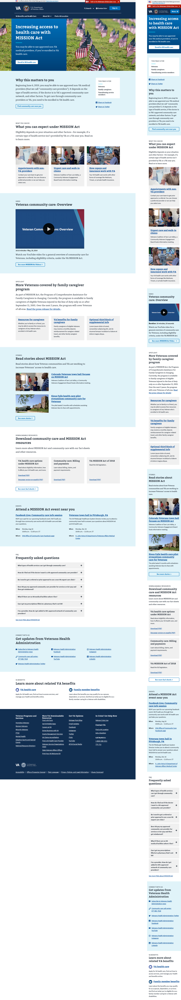
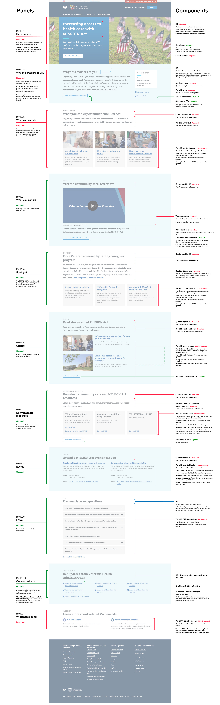

VA Campaign Landing Pages
The problem
The VA has too many web pages that are spun up and left rotting on the internet—if I recall correctly, the VA has over 650,000 unique URLs. This leads to duplicitive content, erroneous or out-of-date information, poor SEO, and a clumsy user experience.
The solution
We believed strongly in mkaing it easy to do the right thing, rather than make it hard to do the wrong thing. To curb the VA business's prolific website creation habits, we developed easy to use Drupal templates and provided rigid guidance on their use, including adding time limits, so that websites can be retired once they are out of use. Read in depth our prolem statements, outcomes, OKRs, and assumptions on the product readme.
My role
I worked with expert content strategists, engineers, and product owners to develop various design templates that work with the VA design system. These templates were designed from scratch, using previous VA websites as samples. We worked together to provide documentation on how they are built, how they should be used (including guidance in the Drupal authoring experience), and how they will improve usability.
Mobile and desktop maximal campaign landing page designs
Developer and drupal markup for campaign landing page
